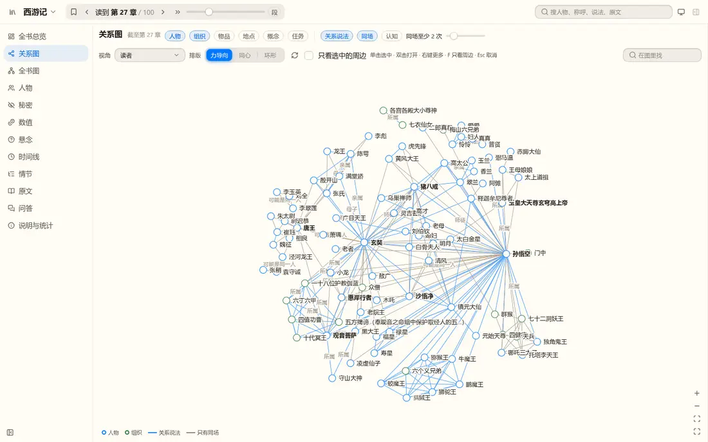
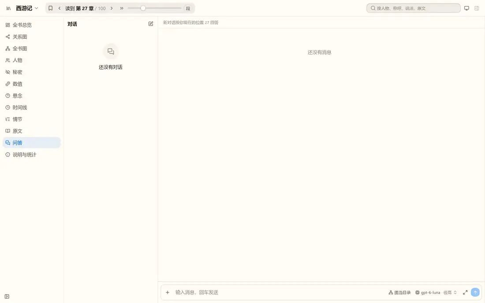
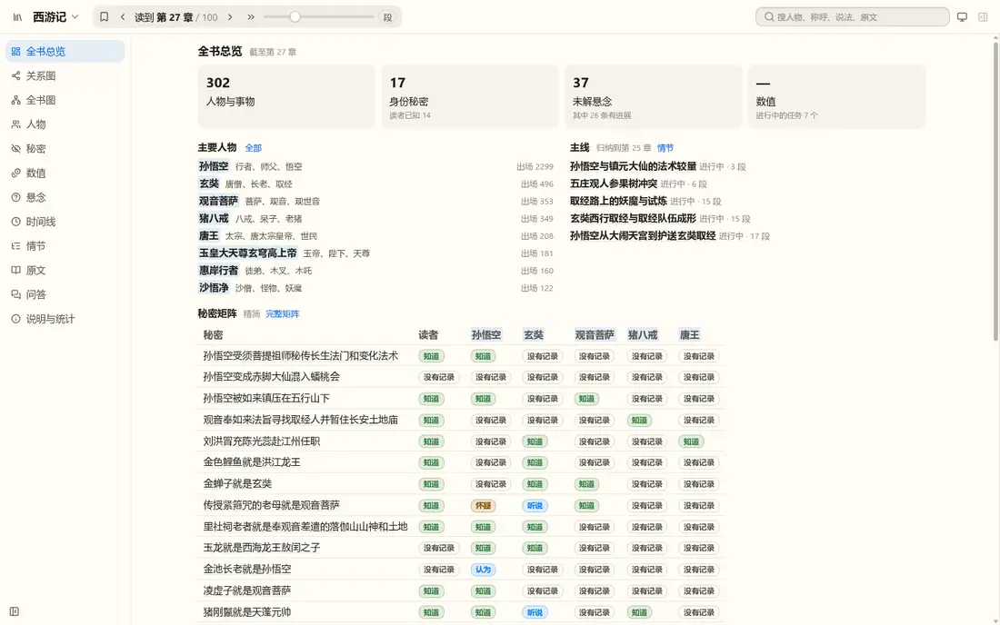

你 2026-10-27 的反馈里，下面这些涉及界面或产品取舍，先出示意稿让你定；其余已定的（别名搜索、右键不拖点、示例去掉 --library）已经做完合入。示意稿是 HTML 画的，只表达位置与内容，不是真实组件的外观；真实外观等你定了方案再按 nb-ui 实现。每题有我的推荐，全选推荐也行。
现状：工具栏里已经有一行 2xs 的小字“单击选中 · 双击打开 · 右键更多…”，但在一排控件的末尾、颜色很淡，你没注意到。下图是现在的关系图。

用户一选点就看到“怎么打开”，并且有按钮可点；点空白或取消选中时浮条消失。右键菜单第一项的快捷键同时改成“双击 / Enter”。
发现得早，但每次悬停都出，老用户会觉得吵；触屏没有悬停。
改动最小，但只对会右键的人有用。
现状：输入框右下角一个“图当目录”小按钮，点了切换到“全读”，没有任何说明。下图是问答页现状，右下角可见。

| 图当目录（默认） | 全读 | |
|---|---|---|
| 做法 | 先查记忆图，再读相关原文段 | 把读到的位置之前的原文都交给模型 |
| 优点 | 快、便宜，适合长书 | 不依赖图有没有漏记，细节最全 |
| 弊端 | 图里漏记或记错的事，模型可能看不到 | 慢、贵；超过模型上下文的书读不完 |
只在第一次出现；之后在按钮上悬停仍能看到一句话摘要。
不会漏看，但切换频繁的人会烦。
旧应用有两样（我在旧代码里找到了）：底部状态条（上下文占用、累积输入/输出/缓存读写 token、缓存命中率、费用）和上下文检查器（上下文构成条、每轮缓存时间线、缓存保留方式、诊断）。nb-story 的每一轮记录里已有 usage（输入、输出、缓存读），数据现成。
状态条是整个会话累积的；抽屉里是逐轮的缓存条与上下文构成，诊断列出“哪里让缓存失效了”。没有价格配置时费用不显示（不显示“未知”）。
工作量小；你说“后续全部都做”，所以只当先做哪一步的选项。
现状：对话上方一行灰字“新对话按你现在的位置 27 回答”，不能改。你要的：用户能自己调章节；调了以后，随下一次提问给助手发一条 system-reminder；书还没抽完时，助手可以读后续章节原文，但图工具不可用。
助手那边收到的是随下一次提问发出的一条 system-reminder：“读者现在读到第 40 回；第 27 回之后的内容现在可以引用”。往回调同理（“请不要再引用第 40 回之后的内容”）。已有对话里的位置也能这样改。
不占顶部空间，但更不显眼。
做法：位置可以选到最新的一章；抽取进度之后的章节，助手只有“读原文”这一个工具，没有图工具，顶部写明；抽取跑完后自动恢复。这条是取舍不是视觉问题，我按上面做，除非你不同意：
现状：书页顶栏右侧有“明暗切换”，书架页（没有书时的首页）和设置页没有；书页左侧导航里也没有设置入口（只能从书架进）。

顶栏里的明暗切换与书页同一个控件（同一份偏好，三个页面共用）；书页入口放在导航底部“收起”按钮旁边，点开是现在的设置页，返回回到原来的位置。
想法：抽取时让模型给每条记录标一个重要程度，细节不挤占默认视图与问答。我的理解与做法草案：
要调用真实模型：20 章三次约 ¥5，我会在你批准后才跑。
快，但标得不稳时要返工整条链路。
你要“大部分命令行功能都能在网页上用”。我核实了的缺口：导入 V9 记忆图文件（nbstory import）、安装 Skill（nbstory skill install）。其余命令的查询页面网页里都有对应的页，但我还没有逐条核对每个命令是否都对得上，排期时逐条核对。这一条不需要你现在判断；上面第 5 条之后我先做这两个缺口。